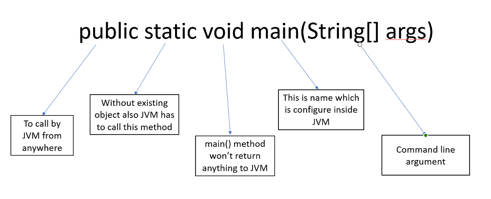

1. Whether class contain main method or not and whether main method is declared according to requirement or not this things won't be checked by compiler at runtime JVM is responsible to check this things.
2. If JVM unable to find main method than we will get,runtime Exception saying"NoSuchMethodError:main".
3. At runtime JVM always search main method with following prototype:

4. The syntax is very strict and we perform any change we will get runtime exception.
5. Even though above syntax in image is very strict,but only the following changes are acceptable:
a. Instead of public static we can take static public i.e in Java the order of modifier is not important.
b. we can declare String[] in any acceptable form.
c. Instead of args we can take any valid Java Identifier.
d. we can replace String array with var_arg parameter.
main(String[] args) = main(String... args)
e. We can declare main method with following modifiers final,synchronized,strictfp.
static final synchronized strictfp public void main(String[] args)